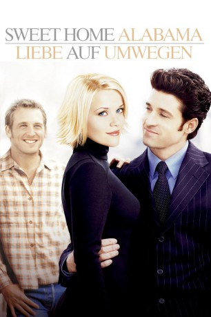
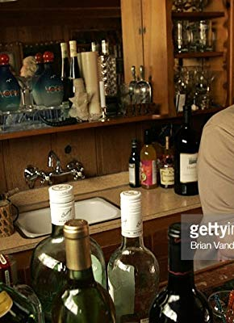

#10200 Sweet Home Alabama - Liebe auf Umwegen
Alternativ: Sweet Home Alabama (Englischer Titel)
 
 IMDB-Wertung: 6.2 / 10
IMDB-Wertung: 6.2 / 10  Metascore: 45
Metascore: 45 
Modedesignerin Melanie genießt das New Yorker Dolce Vita in vollen Zügen, hier eine Cocktailparty feiernd, dort den Sohn der amtierenden Bürgermeisterin beflirtend. Als sie mit letzterem in den Stand der Ehe zu treten gedenkt, holt sie ihre Vergangenheit ein. Denn eigentlich ist Melanie ein Landei aus einem Kuhkaff in Alabama und immer noch mit ihrem Schulfreund Jake verheiratet. Also saust Melanie flugs in die Provinz, um dort so dezent wie möglich das Nötige zu regeln. Dabei läuft nicht alles wie geplant.
Jahr: 2002
Dauer: 109 Minuten
FSK: 0
Land: USA Studio: Buena Vista PicturesTonspuren: DD5.1 - ,
Untertitel: Deutsch,
Auflösung: 1080p (1920x816) Größe: 8140 MB
Genre: Komödie, Liebe
Regisseur:  Andy Tennant
Andy Tennant
Drehbuch: Douglas J. Eboch, C. Jay Cox
Soundtrack: George Fenton
Darsteller:
 Reese Witherspoon als Melanie Smooter
Reese Witherspoon als Melanie Smooter Josh Lucas als Jake Perry
Josh Lucas als Jake Perry Patrick Dempsey als Andrew Hennings
Patrick Dempsey als Andrew Hennings Candice Bergen als Mayor Kate Hennings
Candice Bergen als Mayor Kate Hennings Mary Kay Place als Pearl Smooter
Mary Kay Place als Pearl Smooter Fred Ward als Earl Smooter
Fred Ward als Earl Smooter Jean Smart als Stella Kay Perry
Jean Smart als Stella Kay Perry Ethan Embry als Bobby Ray
Ethan Embry als Bobby Ray Melanie Lynskey als Lurlynn
Melanie Lynskey als Lurlynn Courtney Gains als Sheriff Wade
Courtney Gains als Sheriff Wade Mary Lynn Rajskub als Dorothea
Mary Lynn Rajskub als Dorothea Rhona Mitra als Tabatha Wadmore-Smith
Rhona Mitra als Tabatha Wadmore-Smith- Nathan Lee Graham als Frederick Montana
 Sean Bridgers als Eldon
Sean Bridgers als Eldon- Fleet Cooper als Clinton
 Kevin Sussman als Barry Lowenstein
Kevin Sussman als Barry Lowenstein Dakota Fanning als Young Melanie
Dakota Fanning als Young Melanie Michelle Krusiec als Pan
Michelle Krusiec als Pan- Bob Penny als Wallace Buford
- Mark Matkevich als Tom Darovsic
 Afemo Omilami als Jimmy Lee
Afemo Omilami als Jimmy Lee- Leslie Hendrix als Reporter
- Jen Apgar als Starr
 Sarah Baker als Dix
Sarah Baker als Dix Ted Manson als Colonel Murphy
Ted Manson als Colonel Murphy Sharon Blackwood als Virgie
Sharon Blackwood als Virgie Jody Thompson als Dead Soldier
Jody Thompson als Dead Soldier- Traci Ann Wolfe als Model
-  Eddy Donno als Model
- Kena Allen als TV Fashion Reporter (uncredited)
- Mary Jean Bentley als Wedding Guest #2 (uncredited)
- Randy Bratton als Musician (uncredited)
- Vis Brown als Paparazzi (uncredited)
- Rich Bryant als Paparazzi (uncredited)
- Chris Burns als Wedding Guest #1 (uncredited)
- Brandon Carroll als Line Dancer (uncredited)
- Doshia Darmane als Event Patron (uncredited)
 Colin Ford als Clinton Jr. (uncredited)
Colin Ford als Clinton Jr. (uncredited)- GlenNeta Griffin als Bus Patron (uncredited)
- Jason Guy als Red Carpet Photographer (uncredited)
- Ambre Lake als Wedding Coordinator (uncredited)
- Matt Mangum als Bar Patron (uncredited)
- Jacob Moyer Moats als Bar Patron (uncredited)
 Andrew Prine als Sheriff Holt (uncredited)
Andrew Prine als Sheriff Holt (uncredited)- Thomas Curtis als Young Jake
- Mark Skinner als Bruno
- Phil Cater als Pablo
- Michael Snow als Devin
- Lee Roy Giles als Eugene the Guard
- Kevin Hagan als Jimmy the Driver
Datei: X:\2002\Sweet Home Alabama - Liebe auf Umwegen (2002, FSK0, 1920x816).mkv seit 18.12.2018
Festplatte: Gemischt-01+Anime
 Es gibt insgesamt 93 Filme in der Gruppe '2002'
Es gibt insgesamt 93 Filme in der Gruppe '2002'